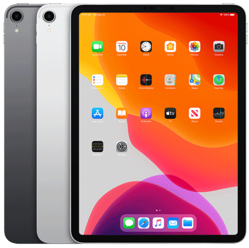

Liquid Retina display
11-inch (diagonal) LED-backlit Multi‑Touch display with IPS technology
2388-by-1668-pixel resolution at 264 pixels per inch (ppi)
ProMotion technology
Wide color display (P3)
True Tone display
Fingerprint-resistant oleophobic coating
Fully laminated display
Antireflective coating
1.8% reflectivity
600 nits brightness
A12Z Bionic chip with 64-bit architecture
Neural Engine
Embedded M12 coprocessor
Wide: 12MP, ƒ/1.8 aperture
Ultra Wide: 10MP, ƒ/2.4 aperture, and 125° field of view
2x optical zoom out; digital zoom up to 5x
Five‑element lens (Wide and Ultra Wide)
Brighter True Tone flash
Panorama (up to 63MP)
Sapphire crystal lens cover
Backside illumination sensor
Hybrid IR filter
Autofocus with Focus Pixels (Wide)
Tap to focus with Focus Pixels (Wide)
Wide color capture for photos and Live Photos
Exposure control
Noise reduction
Smart HDR for photos
Auto image stabilization
Burst mode
Timer mode
Photo geotagging
Image formats captured: HEIF and JPEG
Retina display
7.9-inch (diagonal) LED-backlit Multi-Touch display
2048-by-1536 resolution at 326 pixels per inch (ppi)
Wide color display (P3)
True Tone display
Fingerprint-resistant oleophobic coating
Fully laminated display
Antireflective coating
1.8% reflectivity
500 nits brightness
Supports Apple Pencil
A12 Bionic chip with 64‑bit architecture

Neural Engine
Embedded M12 coprocessor
8-megapixel camera
ƒ/2.4 aperture
Five-element lens
Hybrid IR filter
Backside illumination
Live Photos
Wide color capture for photos and Live Photos
Autofocus
Panorama (up to 43 megapixels)
HDR for photos
Exposure control
Burst mode
Tap to focus
Timer mode
Auto image stabilization
Photo geotagging